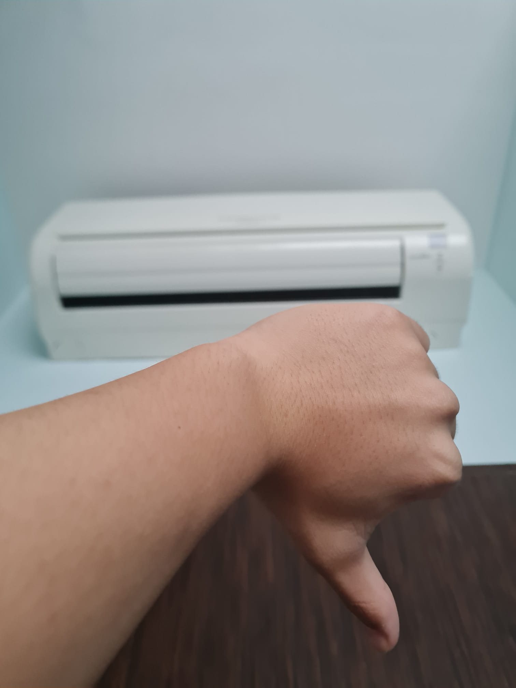
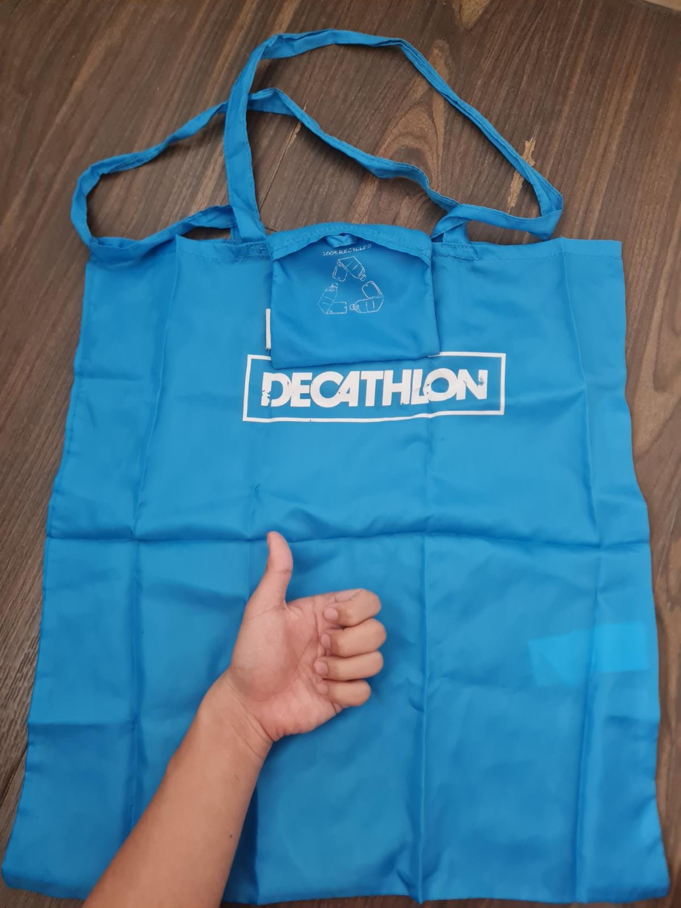
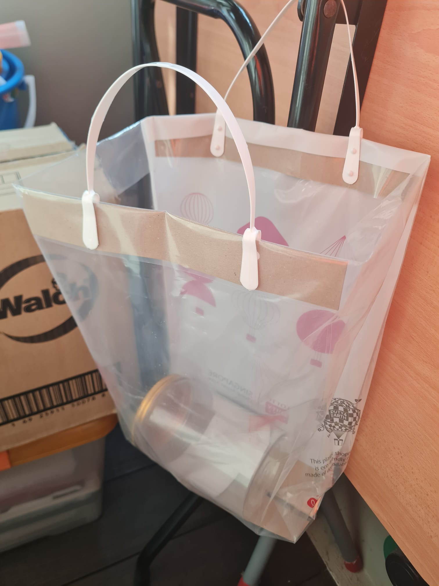

My Thoughts 🧠
Over the years, our forefathers have pillaged Mother Earth's resources dry, with the nonchalant use of fossil fuel and the indiscriminate clearing of forests. Now the onus is on us to help save the earth. Many have said that the damage is irreversible. However, while I don't fully disagree, it doesn't mean that there isn't anything we can fix.
What we can do to save the Earth
While there are many proposed solutions to save the Earth, those typically involve huge involvement from large organisations or governments. This is not feasible for people like us, and can make us feel like we have no say in the future of our planet. That is why my plan to save the planet is actually rather small in scale, and it is simply reducing energy use and using sustainable materials in my daily life. Scroll down to read more!
My personal goals:
-

Reduce aircon usage
Air-conditioning is quite well-known to be a huge energy consumer that is not a necessity. However, people still continue to use it frequently as the world is getting hotter, because of aircon use. To reduce the use of Air-conditioning, I have chosen to use it only once every 2 weeks. Instead of using the aircon, I will try to use the fan instead and ventilate my room better. If I have to use it, I will only lower it down to 25℃ and close my windows and door. This way, I will reduce my non-essential energy consumption.
-

Reusable bags
We all know that plastics are non-biodegradable, and that for a few minutes of convenience we create another piece of trash to store almost permanentely on Earth. But if we bring our own bags, we reduce the need for more plastic production. This is why I will now always bring a reusable bag wherever I go, to keep the stuff I buy or collect to bring back home. My goal is to not bring home plastic bags at all, so that I will not cause even more plastic waste.
-

Recycling
Our world only has a finite amount of resources, and if we continue to discard current items and use new ones, we will run out of resources eventually. That is why we should recycle, so that we can give our old resources a second life, decreasing the number of trash we store and increase our total resources. I will try to practice recycling at home, sorting all the recyclables into different bags depending on what type of material they are, before throwing them into the recycling bin.
Plans to protect air and water, wilderness and wildlife are in fact plans to protect man.